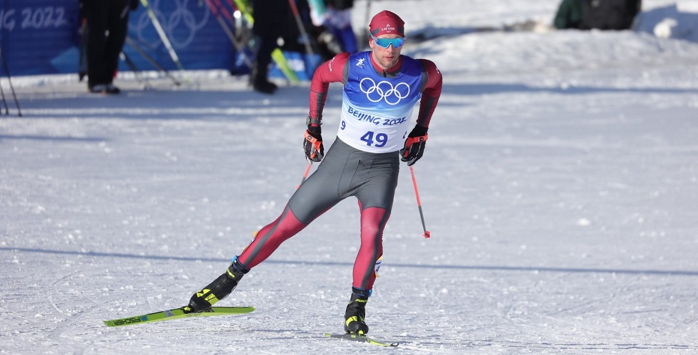

Distanču slēpošana ir ziemas sporta veids, kurā sportisti pārvietojas pa sniegā izveidotu trasi,
izmantojot slēpes un nūjas.
Šis sporta veids ir populārs valstīs, kurās ziemās veidojas sniega sega.
Distanču slēpošanas sacensības var notikt arī telpās, speciāli izveidotos slēpošanas tuneļos.
Distanču slēpošanas augstākais pārvaldes orgāns ir Starptautiskā Slēpošanas federācija (FIS),
kuras pārraudzībā ir arī kalnu slēpošana, tramplīnlēkšana, ziemeļu divcīņa (sportisti sacenšas tramplīnlēkšanā un distanču slēpošanā)
, frīstails, snovbords, kā arī vasaras slēpošanas veidi, piemēram, rollerslēpošana.
Vairāk informācija pieejama: Infoski

